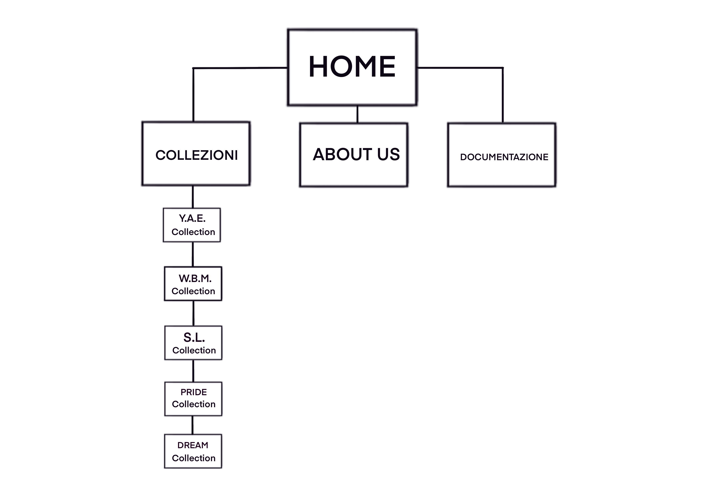

ABSTRACT
LB è il sito catalogo del negozio online di un piccolo small business. Esso si presenta come sito vetrina in cui si possono trovare tutti i prodotti e le novità del progetto. E’ diviso in: una parte di aggiornamento per i clienti in cui possono trovare tutte le promozioni, i best seller e le nuove uscite, una che contiene tutte le collezioni e una parte più informativa per capire com’è nato il progetto e chi lo gestisce. Il sito è una soluzione efficace per far rimanere tutti i clienti aggiornati e ai nuovi a recuperare in maniera semplice e veloce tutti i prodotti. In futuro si potrebbe sviluppare ulteriormente per farlo diventare un sito e-commerce.
Project Management Plan
Benchmarking
OBIETTIVI
Il sito di LB ha come obiettivo quello di fornire una raccolta di tutte le collezioni e prodotti dello shop, in modo tale che ogni utente possa trovare un catalogo e rendere più immediata e semplice la scelta per un eventuale acquisto.
TARGET
Il target utente a cui si riferisce, è principalmente la porzione di pubblico che va dai 15 ai 30 anni.
COMPETITORS
So Worth Loving:
E' il primo sito che ho deciso di analizzare, presenta una grafica accattivante, ma ho trovato il design delle diverse pagine dispersivi con troppi testi e colori che distoglievano l’attenzione dai prodotti in vendita. Il sito risulta molto gradevole esteticamente e ricco di contenuti e link, ma di faticosa lettura.
House Of Holland:Dalla grafica molto semplice e intuitiva, contiene un carosello leggermente invadente sull’haeder che rende meno visibile la navbar, per questo poco ottimale, si risolve proseguendo vero il fondo della pagina. Il sito è funzionale e di uso semplice, intuitivo.
Urban Wear:
E' il sito analizzato che più si avvicina come tematica a LB, la grafica del sito risulta molto semplice ma poco accattivante , in quanto non richiama lo stile dei design dei prodotti. La presenza di tanta pubblicità e pop up disturba la visita al sito, rendendo tutto molto dispersivo.
LB diversamente dai siti sopra elencati non espone i prezzi dei prodotti per questioni di natura legale, per questo verrà utilizzato più come un sito catalogo e di aggionamento, la grafica e il design sviluppato sarà semplice e di chiara lettura.
Struttura e layout
ARCHITETTURA DEL SITO
Wireframe
HOME

PAGINA COLLEZIONI

PAGINA COLLEZIONE
ABOUT US

Scelte grafiche
FONT: Allerta Stencil e Poiret One: Il primo utilizzato per i titoli e le barre di navigazioni principali e il secondo per i testi delle pagine, gli ho selezionati perchè riprendono i design delle varie collezioni infatti sono font simili a quelli usati per le frasi più incisive dei prodotti. Richiama anche il font che viene utilizzato nelle storie del profilo Instagram. Water Brush: Il font usato per i titoli delle collezioni l'ho utilizzato per riprendere l'idea base dei nosti prodotti, cioè il "fatto a mano" ed essendo calligrafico si avvicina molto. Per la documentazione ho optato per un font più semplice e leggero di semplice lettura. il Bebas Neue per i titoli e il Space Grotesk per i testi.
COLORI: il sito è sviluppato sui colori principali di LB cioè il bianco (whitesmoke) e nero che riprendono sia i colori del logo che i colori delle maglie che proponiamo. Mentre il rosso (utilizzato per la selezione del titolo) e l’oro chiaro (lightgoldenrodyellow - utilizzato per la selezione della navbar principale ) riprendono i due colori utilizzati sulle stampe delle prime collezioni con cui è partito lo small business.
La grafica del sito è semplice ed elegante, in modo che sia possa adattare a tutte le tipologie di design.
Linguaggi e strumenti
Linguaggi Web utilizzati:
- HTML
- CSS
Strumenti tecnologici utilizzati a supporto della progettazione web:
- BOOTSTRAP per la parte grafica
- GITHUB per la pubblicazione del sito
- INSTAGRAM e WHATSAPP per la promozione
- CANVA per modificare le immagini presenti nel carosello e nella pagina del design di Dream.
- GOOGLE FONT per i font dei testi delle diverse pagine
- FAETHERICONS per le icone del sito
- GOOGLE ANALYTICS per la monitorare i risultati prodotti dal sito.
- W3SCHOOL per informazioni e utilizzo del codice e scelta colori.
- PROCREATE per la creazione dei wireframe.
- SUBLIME TEXT per la trascrizione del codice html e css
Communication Strategy
Background
La scelta per della creazione del sito è avvenuta sia per un aspetto di utilità professionale si per un'esigenza di catalogo facilmente mostrabile in caso di bisogno. La maggior parte di brand presenti sul mercato possiede un sito proprio dove trovare tutti i prodotti in vendita, il nostro sito non mostrando per questioni legali il prezzo della merce è utile come catalogo e per aggiornamenti per eventuali promozioni sullo shop. La creazione del sito web è efficace in quanto rende più evidenti le eventuali promozioni e la ricerca di tutti i prodotti di una stessa collezione, diversamente dal profilo Instagram che risulta aggiornabile in tempo reale ma più dispersivo soprattuto per le collezioni uscite precedentemente. Anche l’utente nuovo che capita sulla piattaforma in questo modo troverà tutto quello che produciamo e potrà conoscere il brand senza difficoltà.
Obiettivi comunicativi
L’obiettivo è creare uno spazio che possa venir utilizzato sia come spazio di aggiornamento per le promozioni e le nuove uscite , ma anche come catalogo di tutte le nostre collezioni e prodotti. Grazie al sito si potrà misurare più accuratamente il traffico e l’aumento di utenti.
TARGET E AUDIANCE
Il sito cerca di raggiungere principalmente il pubblico under 30, ma tutti i range di età possono rientrare tra i nostri utenti. Con finalità di acquisto il target secondario potrebbe essere quello di donne e uomini dai 30 ai 50 anni.
I gruppi d’interesse sono raggiungibili più efficacemente tramite Instagram e Tiktok, ma anche piattaforme come Facebook e il passaparola con sistemi di comunicazione come Whatsapp possono essere utili.
I servizi personalizzati sul web, come la promozione dei post su Instagram e la condivisione sui diversi social e mezzi di comunicazione possono aiutare l'engagement del sito e dei diversi social ufficiali.
L'utente che visita il sito può avere accesso a tutte le nuove promozioni e nuove uscite, con la possibilità di recuperare anche i prodotti rilasciati precedentemente. Il sito deve garantire facilità di comprensione e chiarezza su eventuali prodotti che possono trovare nelle collezioni. Così da garantire come risultato più audience per lo shop e maggiori vendite.
PROMOZIONE
La promozione prevista per l'uscita del sito avverrà tramite la creazione di un post su Instagram didicato che annuncia l’apertura ufficiale del sito e l’uscita di una collezione nuova in anteprima solo su di esso. Come supporto farò uso anche del passaparola tramite Whatsapp per raggiungere più persone possibili.
Gli obiettivi della promozione:
- Raggiungere 20 like sul post di Instagram
- 100 visualizzazioni al sito